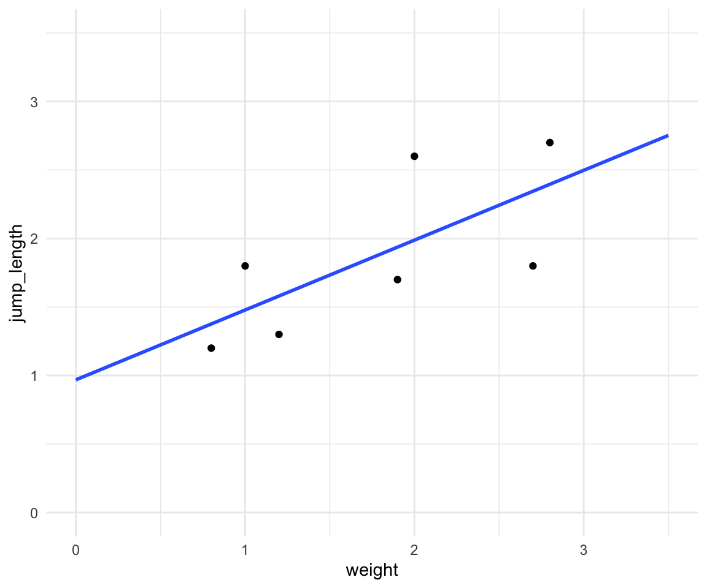

32 Korrelation
Version vom October 11, 2022 um 21:39:24
Die Korrelation gibt uns die Information welche Steigung die Gerade in einer simplen linearen Regression hat. Dabei erlaubt es die Korrelation uns verschiedene Geraden miteinander zu vergleichen. Die Korrelation ist nämlich einheitslos. Wir standardisieren durch die Anwendung der Korrelation die Steigung der Geraden dafür auf -1 bis +1. Damit ist die Korrelation ein bedeutendes Effektmaß für die Abschätzung eines Zusammenhangs zwischen zwei Variablen.
Es gibt aber ein Problem. Nämlich nur weil etwas miteinander korreliert muss es keinen kausalen Zusammenhang geben. So ist die Ursache und Wirkung manchmal nicht klar zu benennen. Nehmen wir als plaktives Beispiel dicke Kinder, die viel Fernsehen. Wir würden annehmen, dass zwischen dem Fernsehkonsum und dem Gewicht von Kindern eine hohe Korrelation vorliegt. Sind jetzt aber die Kinder dick, weil die Kinder so viel Fernsehen oder schauen einfach dicke Kinder mehr Fernsehen, da die Kinder dick sind und sich nicht mehr so viel bewegen wollen?
Die Internetseite Spurious correlations zeigt verschiedene zufällige Korrelationen zwischen zwei zufällig ausgewählten Variablen aus den USA.
Im Weiteren ist das Wort korrelieren zum Gattungsbegriff in der Statistik geworden, wenn es um den Vergleich oder den Zusammenhang von zwei oder mehreren Variablen geht. Das heißt, in der Anwendung wird gesagt, dass wir A mit B korrelieren lassen wollen. Das Wort korrelieren steht jetzt aber nicht für das Konzept statistische Korrelation sondern ist Platzhalter für eine noch vom Anwender zu definierende oder zu findene statistische Methode.
In diesem Kapitel wollen wir uns mit der statisischen Korrelation beschäftigen. Die statistische Korrelation ist weniger aufregender, denn am Ende ist die Korrelation nur eine Zahl zwischen -1 und +1.
Wenn wir in der Klausur eine Korrelation berechnen wollen, dann sprechen wir immer von der Korrelation nach Pearson.
32.1 Genutzte R Pakete für das Kapitel
Wir wollen folgende R Pakete in diesem Kapitel nutzen.
pacman::p_load(tidyverse, magrittr, conflicted, readxl,
corrplot)
conflict_prefer("select", "dplyr")
conflict_prefer("filter", "dplyr")
conflict_prefer("mutate", "dplyr")Am Ende des Kapitels findest du nochmal den gesamten R Code in einem Rutsch zum selber durchführen oder aber kopieren.
32.2 Daten
Wir wollen uns erstmal mit einem einfachen Datenbeispiel beschäftigen. Wir können die Korrelation auf sehr großen Datensätzen berechnen, wie auch auf sehr kleinen Datensätzen. Prinzipiell ist das Vorgehen gleich. Wir nutzen jetzt aber erstmal einen kleinen Datensatz mit \(n=7\) Beobachtungen. In der Tabelle 32.1 ist der Datensatz simplel_tbl dargestellt. Wir wollen den Zusammenhang zwischen der Sprungweite in [cm] und dem Gewicht in [mg] für sieben Beobachtungen modellieren.
| jump_length | weight |
|---|---|
| 1.2 | 0.8 |
| 1.8 | 1.0 |
| 1.3 | 1.2 |
| 1.7 | 1.9 |
| 2.6 | 2.0 |
| 1.8 | 2.7 |
| 2.7 | 2.8 |
In Abbildung 32.1 sehen wir die Visualisierung der Daten simple_tbl in einem Scatterplot mit einer geschätzen Gerade. Wir wollen jetzt mit der Korrelation die Steigung der Geraden unabhängig von der Einheit beschreiben. Oder wir wollen die Steigung der Geraden standardisieren auf -1 bis 1.

32.3 Korrelation theoretisch
Wir schauen uns hier die Korrelation nach Pearson an. Die Korrelation nach Pearson nimmt an, dass beide zu korrelierende Variablen einer Normalverteilung entstammen. Wenn wir keine Normalverteilung vorliegen haben, dann nutzen wir die Korrelation nach Spearman. Die Korrelation nach Spearman basiert auf den Rängen der Daten und ist ein nicht-parametrisches Verfahren. Die Korrelation nach Pearson ist die parametrische Variante. Wir bezeichnen die Korrelation entweder mit \(r\) oder dem griechischen Buchstaben \(\rho\) als rho gesprochen.
Was macht nun die Korrelation? Die Korrelation gibt die Richtung der Geraden an. Oder noch konkreter die Steigung der Geraden normiert auf -1 bis 1. Die Abbildung 32.2 zeigt die Visualisierung der Korrelation für drei Ausprägungen. Eine Korrelation von \(r = -1\) bedeutet eine maximale negative Korrelation. Die Gerade fällt in einem 45° Winkel. Eine Korrelation von \(r = +1\) bedeutet eine maximale positive Korrelation. Die gerade steigt in einem 45° Winkel. Eine Korrelation von \(r = 0\) bedeutet, dass keine Korrelation vorliegt. Die Grade verläuft parallel zur x-Achse.

Im Folgenden sehen wir die Formel für den Korrelationskoeffizient nach Pearson.
\[ \rho = r_{x,y} = \cfrac{s_{x,y}}{s_x \cdot s_y} \]
Wir berechnen die Korrelation immer zwischen zwei Variablen \(x\) und \(y\). Es gibt keine multiple Korrelation über mehr als zwei Variablen. Im Zähler der Formel zur Korrelation steht die Kovarianz von \(x\) und \(y\).
Wir können mit folgender Formel die Kovarianzen zwischen den beiden Variablen \(x\) und \(y\) berechnen.
\[ s_{x,y} = \sum_{i=1}^n(x_i-\bar{x})(y_i-\bar{y}) \]
Die folgende Formel berechnet die quadrierten Abweichung der Beobachtungen von \(x\) zum Mittelwert \(\bar{x}\).
\[ s_x = \sqrt{\sum_{i=1}^n(x_i-\bar{x})^2} \]
Die folgende Formel berechnet die quadrierten Abweichung der Beobachtungen von \(y\) zum Mittelwert \(\bar{y}\).
\[ s_y = \sqrt{\sum_{i=1}^n(y_i-\bar{y})^2} \]
In Tabelle 32.2 ist der Zusammenhang nochmal Schritt für Schrit aufgeschlüsselt. Wir berechnen erst die Abweichungsquadrate von \(x\) und die Abweichungsquadrate von \(y\). Dann noch die Quadrate der Abstände von \(x\) zu \(y\). Abschließend summieren wir alles und zeihen noch die Wurzel für die Abweichungsquadrate von \(x\) und \(y\).
| jump_length \(\boldsymbol{y}\) | weight \(\boldsymbol{x}\) | \(\boldsymbol{(y_i-\bar{y})^2}\) | \(\boldsymbol{(x_i-\bar{x})^2}\) | \(\boldsymbol{(x_i-\bar{x})(y_i-\bar{y})}\) |
|---|---|---|---|---|
| 1.2 | 0.8 | 0.45 | 0.94 | 0.65 |
| 1.8 | 1.0 | 0.01 | 0.60 | 0.06 |
| 1.3 | 1.2 | 0.33 | 0.33 | 0.33 |
| 1.7 | 1.9 | 0.03 | 0.02 | -0.02 |
| 2.6 | 2.0 | 0.53 | 0.05 | 0.17 |
| 1.8 | 2.7 | 0.03 | 0.86 | -0.07 |
| 2.7 | 2.8 | 0.69 | 1.06 | 0.85 |
| \(\sum\) | 2.05 | 3.86 | 1.97 | |
| \(\sqrt{\sum}\) | 1.43 | 1.96 |
Wir können die Zahlen dann aus der Tabelle in die Formel der Korrelation nach Pearson einsetzen. Wir erhalten eine Korrelation von 0.70 und haben damit eine recht starke positve Korrelation vorliegen.
\[
\rho = r_{x,y} = \cfrac{1.97}{1.96 \cdot 1.43} = 0.70
\] Wir können mit der Funktion cor() in R die Korrelation zwischen zwei Spalten in einem Datensatz berechnen. Wir überprüfen kurz unsere Berechnung und stellen fest, dass wir richtig gerechnet haben.
cor(simple_tbl$jump_length, simple_tbl$weight)[1] 0.70149847In Abbildung 32.3 sehen wir nochmal die Zusammenhänge der Abstände farbig hervorgehoben. Dader Nenner nur positive Zahlen annehmen kann, wird das Vorzeichen der Korrelation durch den Zähler bestimmt.

32.4 Korrelation in R
Wir nutzen die Korrelation in R selten nrur für zwei Variablen. Meistens schauen wir uns alle numerischen Variablen gemeinsam in einer Abbildung an. Wir nennen diese Abildung auch Korrelationsplot. Faktoren sind keine numerischen Variablen. Daher kann es sein, dass für dein Experiment kein Korrelationsplot in Frage kommt.
Wir schauen uns jetzt nochmal einen die Berechnung für den Datensatz simple_tbl an. Wir müssen für die Korrelation zwischen zwei Variablen diese Variablen mit dem $-Zeichen aus dem Datensatz extrahieren. Die Funktion cor() kann nur mit Vektoren oder ganzen numerischen Datensätzen arbeiten.
Wir können den Korrelationskoeffizienten nach Pearson mit der Option method = "pearson" auswählen.
cor(simple_tbl$jump_length, simple_tbl$weight, method = "pearson")[1] 0.70149847Wenn wir die nicht-parametrische Variante des Korrelationskoeffizienten nach Spearman berechnen wollen nutzen wir die Option method = "spearman".
cor(simple_tbl$jump_length, simple_tbl$weight, method = "spearman")[1] 0.79282497Wir können auch einen statistischen Test für die Korrelation rechnen. Die Nullhypothese \(H_0\) wäre hierbei, dass die Korrelation \(r = 0\) ist. Die Funktion cor.test() liefert den entsprechenden \(p\)-Wert für die Entscheidung gegen die Nullhypothese.
cor.test(simple_tbl$jump_length, simple_tbl$weight, method = "pearson")
Pearson's product-moment correlation
data: simple_tbl$jump_length and simple_tbl$weight
t = 2.20101, df = 5, p-value = 0.078993
alternative hypothesis: true correlation is not equal to 0
95 percent confidence interval:
-0.10929883 0.95176731
sample estimates:
cor
0.70149847 Aus dem Test erhalten wir den \(p\)-Wert von \(0.079\). Damit liegt der \(p\)-Wert über den Signifikanzniveau von \(\alpha\) gleich 5%. Wir können somit die Nullhypothese nicht ablehnen. Wir sehen hier, die Probelematik der kleinen Falzahl. Obwohl unsere Korrelation mit \(0.7\) groß ist erhalten wir einen \(p\)-Wert, der nicht die Grenze von 5% unterschreitet. Wir sehen, dass die starre Grenze von \(\alpha\) auch Probleme bereitet.
Abschließend wollen wir uns noch die Funktion corrplot() aus dem gleichnamigen R Paket corrplot anschauen. Die Hilfeseite zum Paket ist sehr ausführlich und bietet noch eine Reihe an anderen Optionen. Wir benötigen dafür einen etwas größeren Datensatz mit mehreren numerischen Variablen. Wir nutzen daher den Gummibärchendatensatz und selektieren die Spalten count_bears bis semester aus.
corr_gummi_tbl <- read_excel("data/gummibears.xlsx") %>%
select(count_bears:semester)Wir brauchen für die Funktion corrplot() eine Matrix mit den paarweisen Korrelationen. Wir können diese Matrix wiederum mit der Funktion cor() erstellen. Wir müssen dazu aber erstmal alle numerischen Variablen mit select_if() selektieren und dann alle fehlenden Werte über na.omit() entfernen.
count_bears count_color age height semester
count_bears 1.000 0.336 0.106 -0.129 0.107
count_color 0.336 1.000 -0.021 -0.131 0.001
age 0.106 -0.021 1.000 -0.106 0.031
height -0.129 -0.131 -0.106 1.000 -0.002
semester 0.107 0.001 0.031 -0.002 1.000Wir sehen das in der Korrelationsmatrix jeweils über und unterhalb der Diagonalen die gespiegelten Zahlen stehen. Wir können jetzt die Matrix cor_mat in die Funktion corrplot() stecken und uns den Korrelationsplot in Abbildung 32.4 einmal anschauen.
corrplot(cor_mat)
Wir sehen in Abbildung 32.4, dass wir eine schwache positive Korrelation zwischen count_color und count_bears haben, angezeigt durch den schwach blauen Kreis. Der Rest der Korrelation ist nahe Null, tendiert aber eher ins negative.
Nun ist in dem Plot natürlich eine der beiden Seiten überflüssig. Wir können daher die Funktion corrplot.mixed() nutzen um in das untere Feld die Zahlenwerte der Korrelation darzustellen.
corrplot.mixed(cor_mat)
Es gibt noch eine Vielzahl an weiteren Möglichkeiten in den Optionen von der Funktion corr.mixed(). Hier hilft dann die Hilfeseite der Funktion oder aber die Hilfeseite zum Paket.